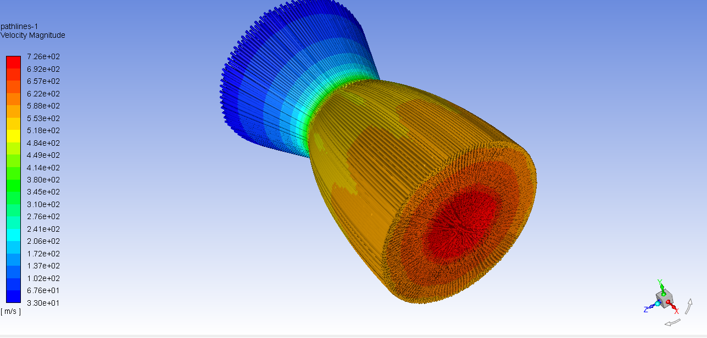
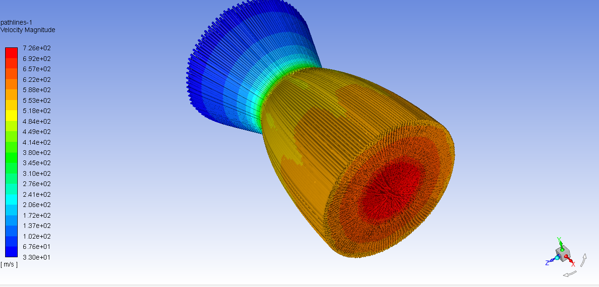

Movement I: Industrial Kinematics

The AMU Genesis
Initial core concept of our Semi-Autonomous Manufacturing Units (AMUs). These units are designed for adaptive re-entry and on-orbit re-tasking.
Fluid Dynamic Precision
Nozzle optimization using Computational Fluid Dynamics (CFD) in ANSYS. Fine-tuning the geometry to maximize thrust efficiency at varying atmospheric densities.
 

Movement II: Orbital Logistics & Dynamics

Zero-Emission Refueling
Our concept for sustainable, environmentally friendly fuel depots. These stations form the logistical nodes for a healthy interplanetary economy.
Ascent Characterization
Iterative rocket simulation logs (reaching 3000m+ thresholds) to test the behavioral stability of propulsion frameworks during the initial boost phase.
Movement III: Planetary Harvest & Extraction

Adaptive Agricultural Ecosystems
Modular greenhouse designs capable of operating in orbit, on the lunar surface, or in subterranean non-terrestrial environments.

The Extractor Archetype
Heavy-extraction rover conceptualization. Ongoing R&D focuses on multi-articulated walking gears to navigate low-gravity asteroid regolith.